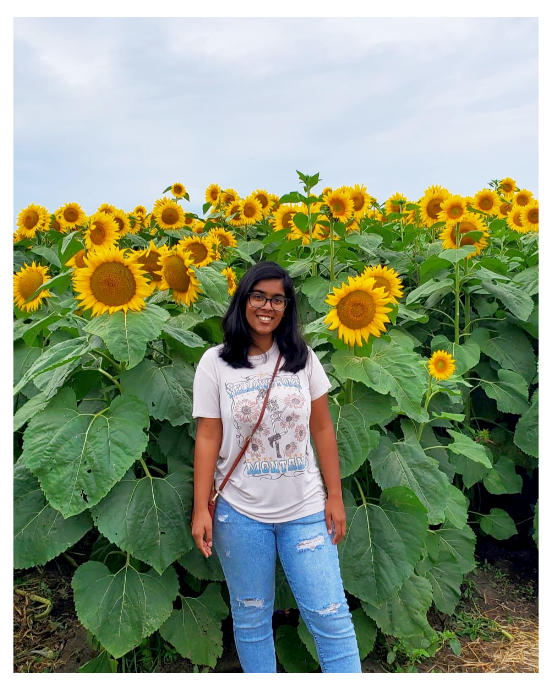

Hello! My name is Srijita Chandra, and I am a software engineer with 3+ years of experience building dynamic web applications, and creating intuitive user interfaces. I am passionate about building scalable applications and learning new technologies.
Currently, I am pursuing a research role as a Graduate Research Assistant, where I focus on software tool development for biological sequencing data. I have developed a robust SQL database and built an interactive web UI using C# and .NET to support research on the porcine reproductive and respiratory syndrome virus (PRRSV).
Outside of work, you can find me whipping up something sweet in the kitchen, growing my ever-expanding collection of house plants, or crocheting. I guess you could say I’m always "planting" new ideas, "stitching" together solutions, and trying to "bake" a little creativity into everything I do!

Chandra, S. Cezar, G., Rupasinghe, K., Zeller, M., Main, R., Rovira, A., Matias-Ferreyra, F., Pillatzki, A., Prarat, M., Bowen, C., Linhares, D., Huai, M., Trevisan, G., 2024. ‘Have we seen this PRRSV before? Where? When? SDRS PRRSV BLAST: An informative tool to support swine veterinarians and producers. AASV Annual Meeting 2024’, AASV Annual Meeting 2024: Leading AASV into the Future. Nashville, Tennessee, 24-27 February., Iowa: AASV, pp. 33 – 35. Available from: https://www.aasv.org/10.54846/am2024/7/
Access the toolSrivastava, M., Pallavi, S., Chandra, S. and Geetha, G., 2018. Comparison of optimizers implemented in Generative Adversarial Network (GAN). International Journal of Pure and Applied Mathematics, 119(12), pp.16831-16835.